破解Windows 10登入密碼
筆者常需要使用公用電腦辦公，偶爾會需要安裝一些驅動程式或是軟體，但是做這些動作都需要輸入系統管理員的密碼，所以這篇文章在說明如果不知道系統管理員密碼的話，有什麼樣的解決辦法。
Part 1: 製作安裝程式USB或光碟
如果有Windows 10的光碟及光碟機的話，直接跳到Part 2。
沒有Windows 10的光碟或是沒有光碟機的話，我們就要把Windows 10安裝程式放到USB隨身碟中（8GB含以上），不過製作這個USB也要用到系統管理員密碼，所以你要找另一台你有權限安裝軟體的電腦來建立這個USB。
- 到官方網站下載。
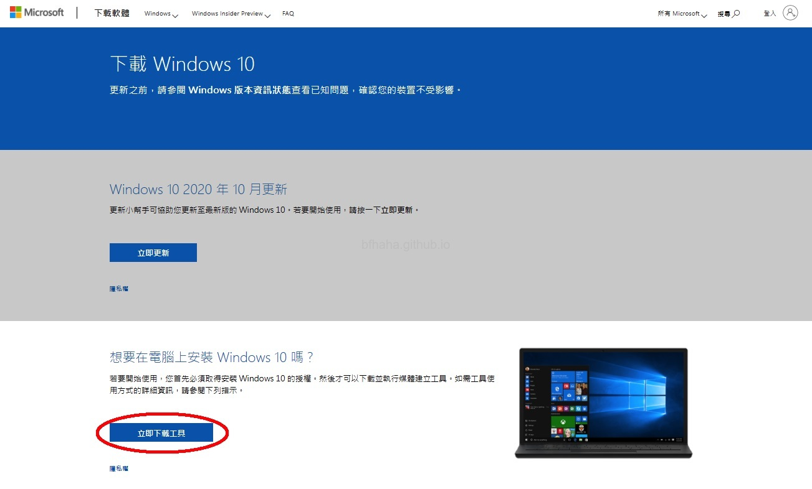
- 安裝時會要求權限。
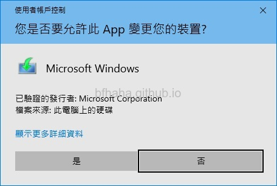
- 稍等一下。
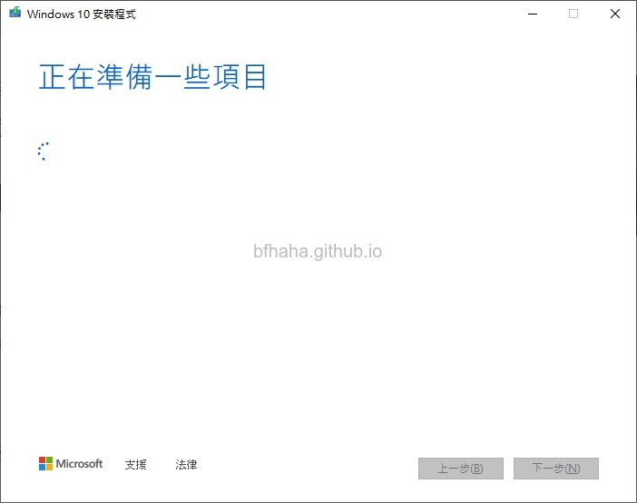
- 接受條款。
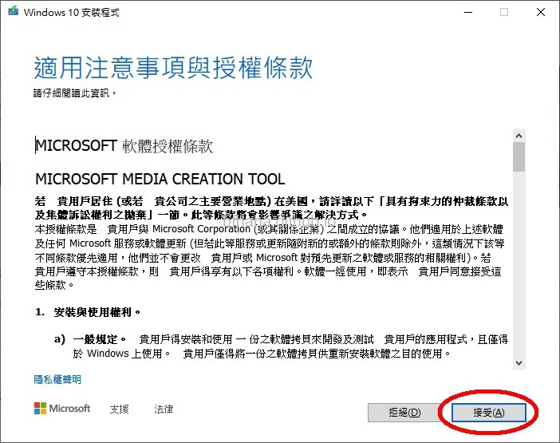
- 選擇安裝到其他裝置。
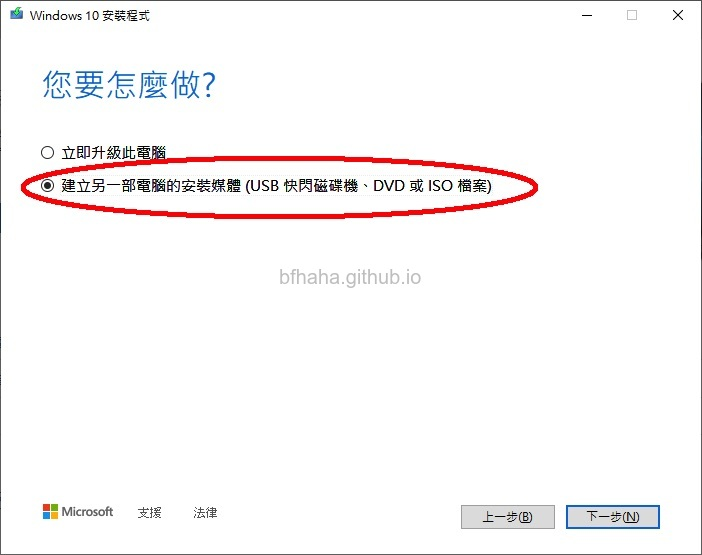
- 語言及版本依需求選擇。

- 選擇存放到USB隨身碟。
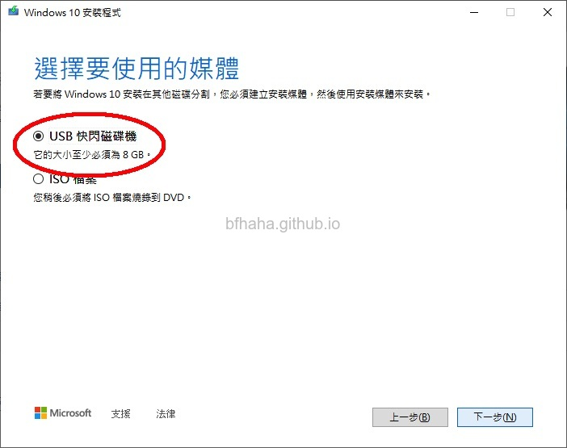
- 選擇USB隨身碟所在的位置。
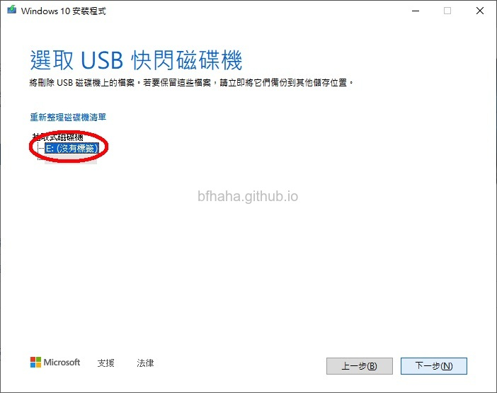
- 開始下載，這要花一點時間，等待的時間可以聽聽房東的貓。
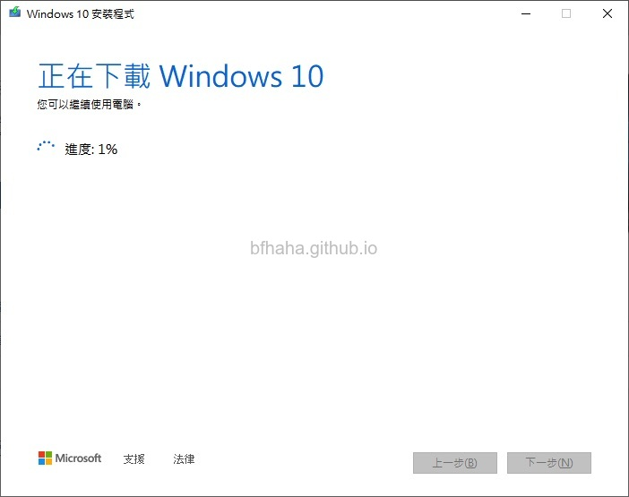
- 製作完成。
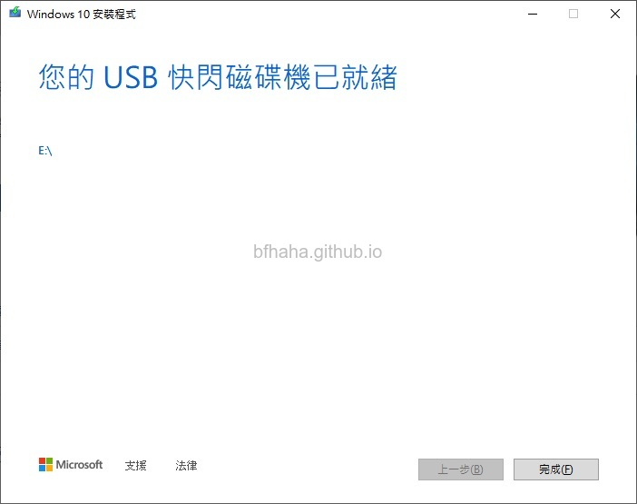
- 收尾。
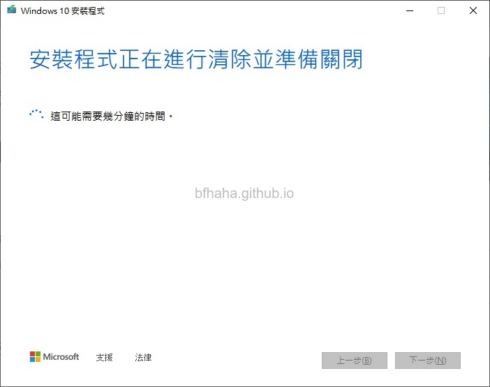
- 可以看到這個USB隨身碟中已經有Windows 10的安裝檔案了。
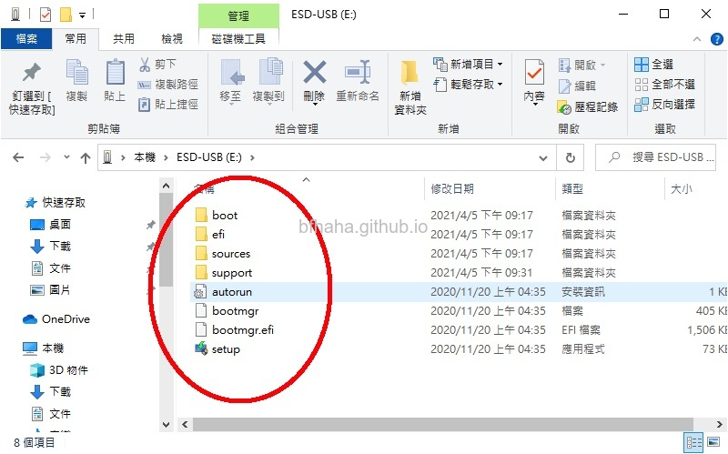
Part 2: 設定USB或光碟開機
我們先在要破解登入的電腦上，設定用USB開機（或是光碟開機），也就是開機時先讀取USB（或光碟）而不是硬碟。
- 顯示開機畫面時按DEL或是F2進到BIOS。
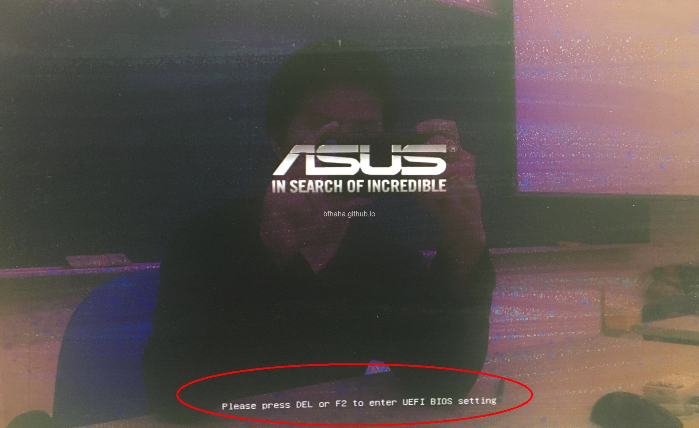
- 這裡每個人的電腦的BIOS介面差異很大，僅供參考，不過大原則都是一樣的，設定開機順序是在boot的選單下。下圖中可以看到原本是硬碟開機。
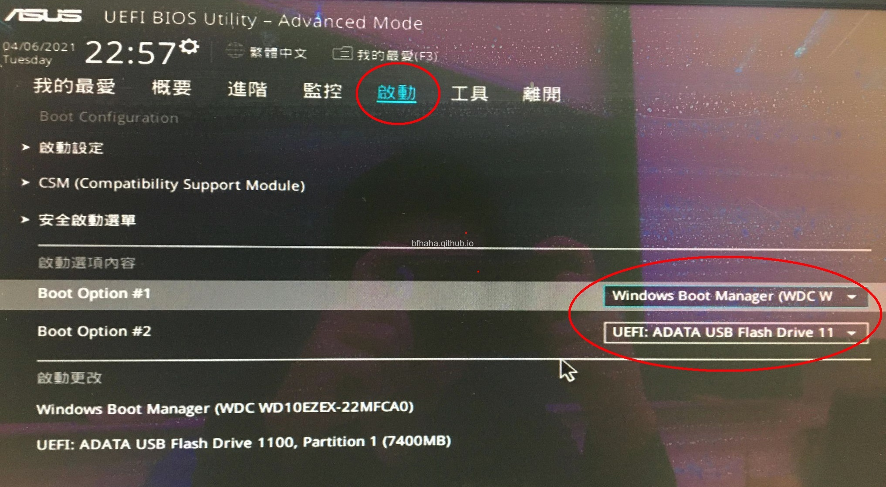
- 我們在上面按下Enter或點選，就可以選擇改為USB隨身碟開機（或光碟開機）。
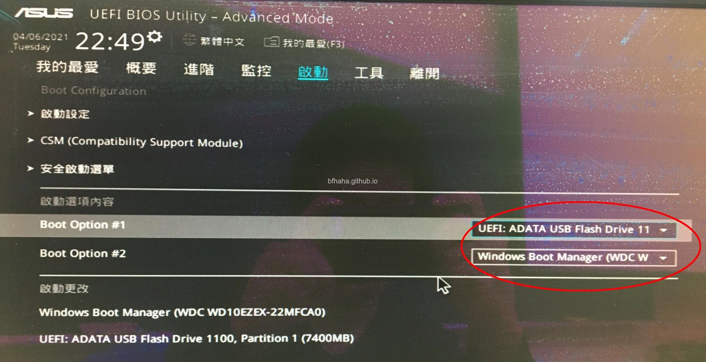
- 最後要儲存後離開，並重新啟動。
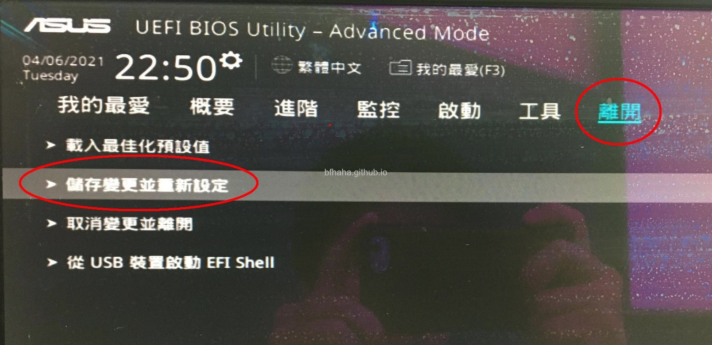
- 最後確認。
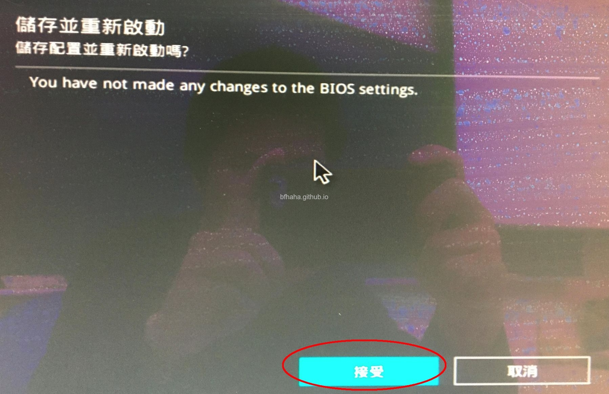
Part 3: 將[命令提示字元]偽裝成螢幕小鍵盤
接著插入Part 1製作的USB（或光碟）。建議最好插在黑色的USB插口，而不是藍色的插口，因為藍色的是3.0，太舊的電腦可能會有讀取上的問題。開機時就會讀取USB或光碟。順利讀取後就會開始Windows 10的安裝程式。
- 如果是設定為光碟開機，開機時會出現Press any key to boot from CD or DVD...這段話並倒數三秒，要把握時機按下任意鍵，免得錯過。
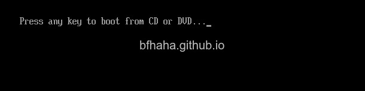
- 出現[Windows安裝程式]的畫面，按下[下一步]，或是直接按Ctrl+Alt+F10也可以直接開啟[命令提示字元]。
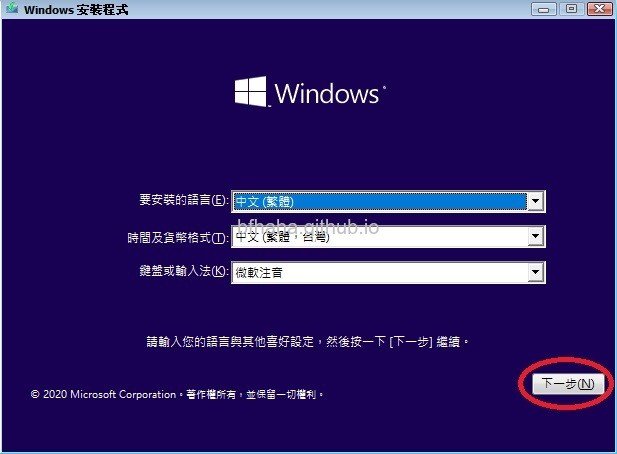
- 接著不要選擇[立即安裝]，而是點選[修復您的電腦]。
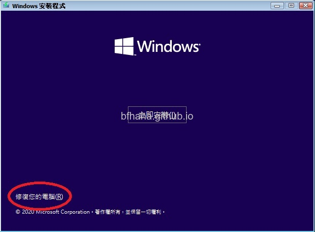
- 選擇[疑難排解]。
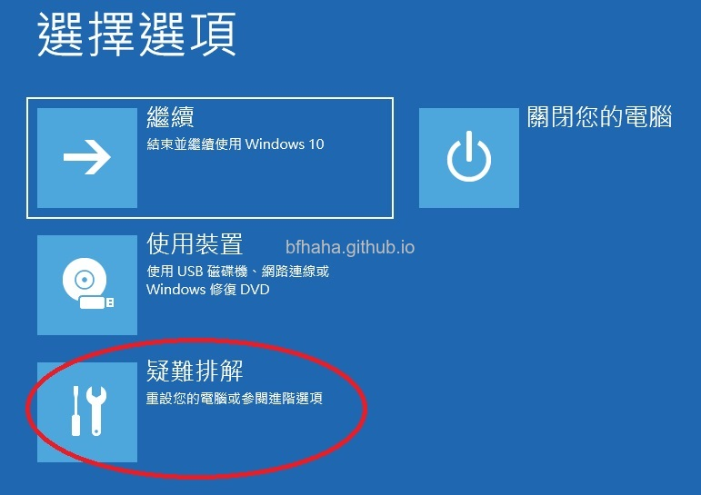
- 點選[命令提示字元]。
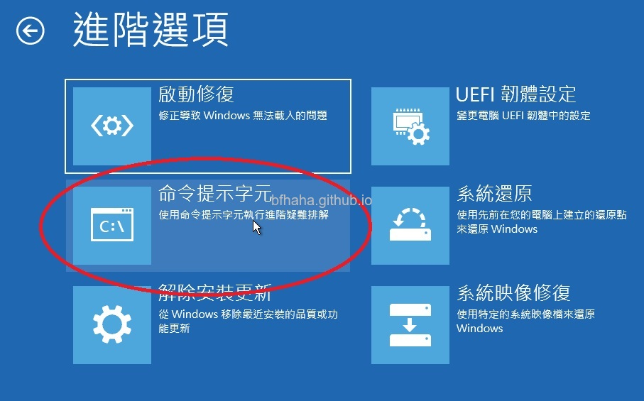
- 開啟[命令提示字元]。
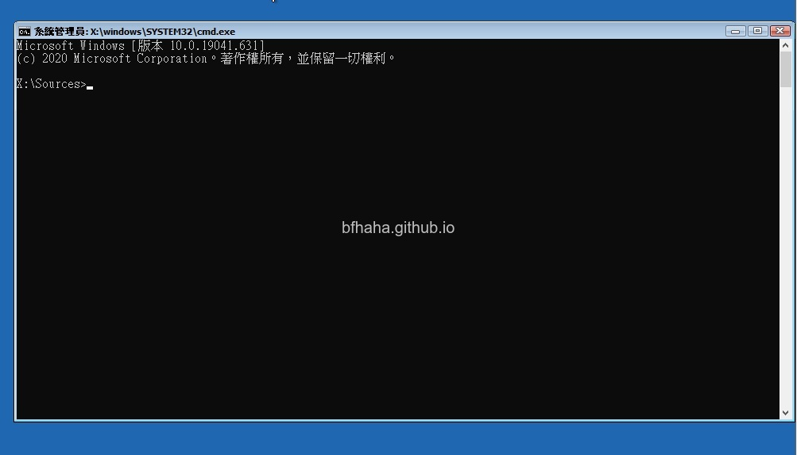
- 要先確認原本的Windows 10安裝在哪一個槽，我的方法是依序切換到c, d, e槽，然後利用dir指令檢視這個磁碟區裡的檔案，通常有windows及Program Files這兩個資料夾的就是了。我們在這裡假設安裝在C槽，依序輸入下面的指令，各指令的功能解釋在後面，輸入時請仔細檢查，免得輸入錯了，後面找不到問題出在哪。
另外，大部分網站的教學都是教說直接把[命令提示字元]偽裝成[螢幕小鍵盤]，但有可能會遇到一個問題，就是Windows內建的防毒軟體（Windows Defender）會發現這個偽裝的[螢幕小鍵盤]，然後封鎖它，造成按了[螢幕小鍵盤]後沒有反應、沒辦法打開，所以我們要先把這個防毒軟體擋住。擋住的方式就是更改防毒軟體所在的資料夾名稱，讓防毒軟體沒辦法順利執行。（大部分網站都是說Windows Defender是位在C:\ProgramData\Microsoft\Windows Defender\Platform\<version>，但筆者實際測試發現是在C:\Program Files\Windows Defender）
網友Woodstock分享心得說如果還是不行打開的話，要進到安全模式才行。
筆者試過很多方法，包括在[命令提示字元]中關閉Windows Defender（先把當前目錄切換到c:\windows\system32，輸入指令sc config WinDefend start=disabled及sc stop WinDefend，但顯示訊息[指定的服務並不是已安裝的服務]）。筆者也試過在[命令提示字元]中利用powershell的指令將[螢幕小鍵盤]（偽裝的）這個程式排除在防毒軟體的黑名單中（先把當前目錄切換到c:\windows\system32\windowspowershell\v1.0，執行指令powershell -Command Add-MpPreference -ExclusionProcess "c:\windows\system32\osk.exe"，注意，Command跟Add中間有空格），但都沒用。
- c:（表示切換到c槽）
- cd program files（表設切換到program files這個資料夾）
- ren "Windows Defender" "Windows Defender Backup"（表示將防毒軟體的資料夾重新命名）
- cd\windows\system32（表示切換到windows\system32這個資料夾，注意，cd後面不是空格）
- copy cmd.exe cmd.exe.bac（cmd.exe就是[命令提示字元]，這指令是把[命令提示字元]重新命名，當作備份）
- copy osk.exe osk.exe.bac（osk.exe就是螢幕小鍵盤，這個指令是把螢幕小鍵盤重新命名，當作備份）
- del osk.exe（刪除原本的螢幕小鍵盤）
- ren cmd.exe osk.exe（把[命令提示字元]重新命名成螢幕小鍵盤，也就是偽裝成螢幕小鍵盤）
- shutdown -r -t 00（立即重新開機）
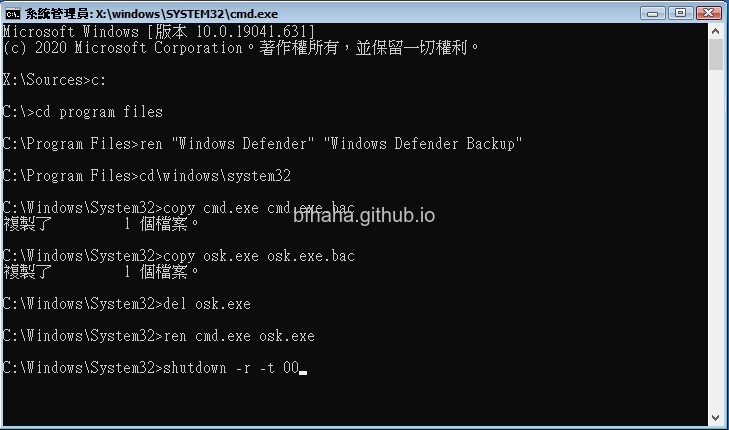
Part 4: 繞過登入
重開機後又會從光碟或USB開機。如果是光碟開機，出現Press any key to boot from CD or DVD...時就不用理它，等他倒數完。如果是從USB開機，那就如Part 3的操作，但是到了第21步時選擇[繼續]。
- 進到登入畫面的時候，右下角有一個[輕鬆存取]，並選擇其中的[螢幕小鍵盤]，這時候實際上會執行[命令提示字元]。
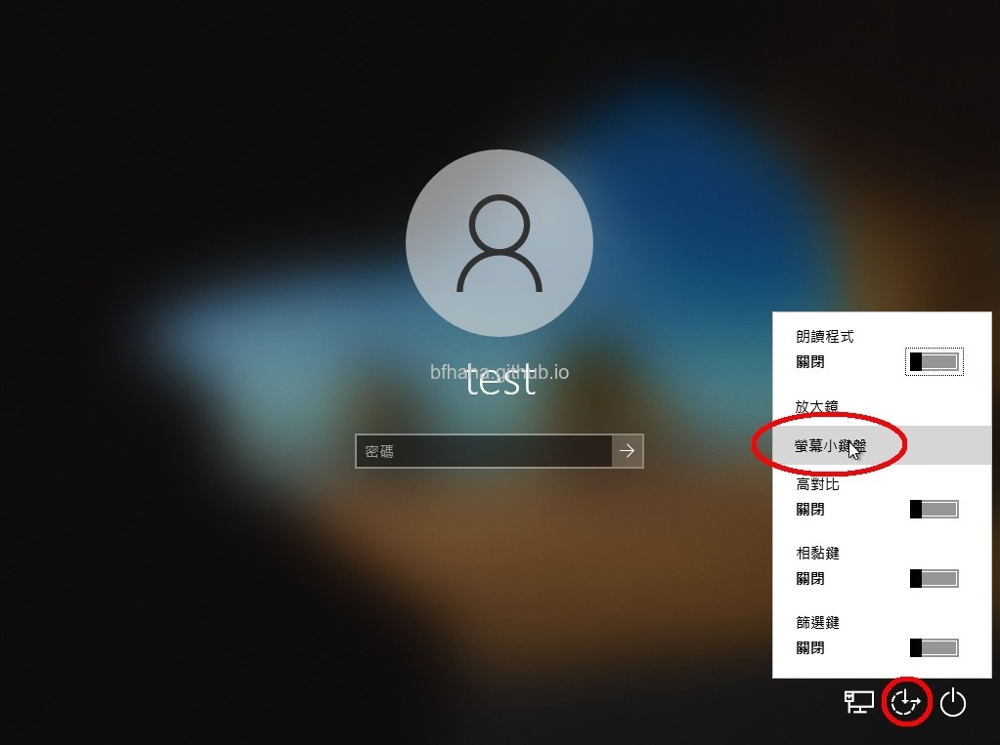
- 我們原本使用的使用者並不是系統管理員，所以我們要重置一個系統管理員的密碼並且登入，我們選擇Administrator這個系統管理員，這個帳戶預設是關閉的，我們必須將其啟動才能更改其密碼，如果不啟動它的話，就算你改了它的密碼，你也沒辦法選擇它來登入。
- net user Administrator /active:yes（這是啟動Administrator這個系統管理員）
- net user Administrator *（這是重設密碼的指令）
- 接著會要你輸入密碼。注意到這時候輸入東西不會顯示，會讓人誤以為鍵盤無法作用，但實際上是有的，因為如果你兩次輸入的密碼不同它會知道，就表示是可以輸入的。我猜萎軟選擇用不顯示密碼的方式是避免被別人看到，為何不用米字號呢。
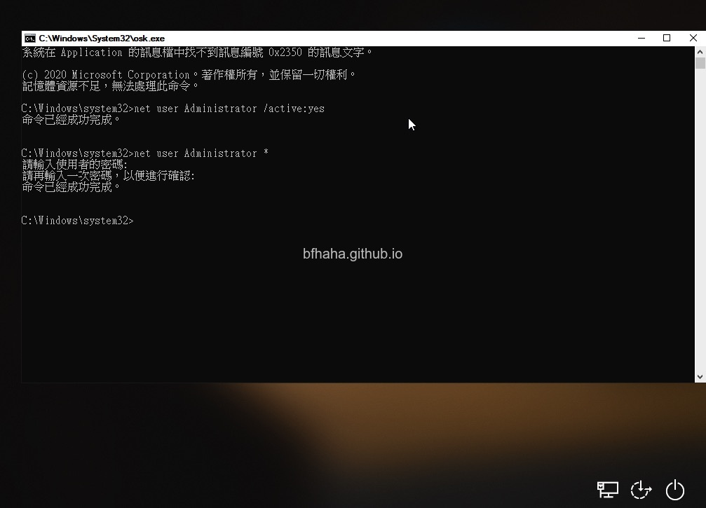
- 完成後重新開機，在登入的畫面就會有Administrator這個使用者可以選擇。
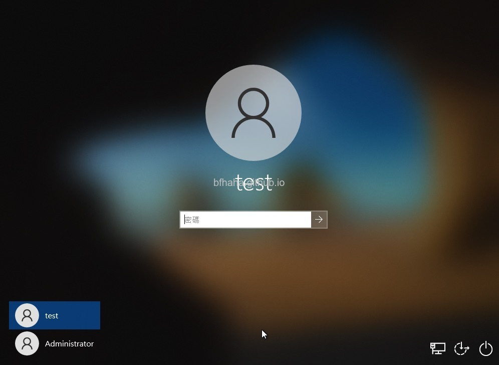
- 選擇Administrator這個使用者後輸入你剛剛設定的密碼就可以登入並且安裝軟體。
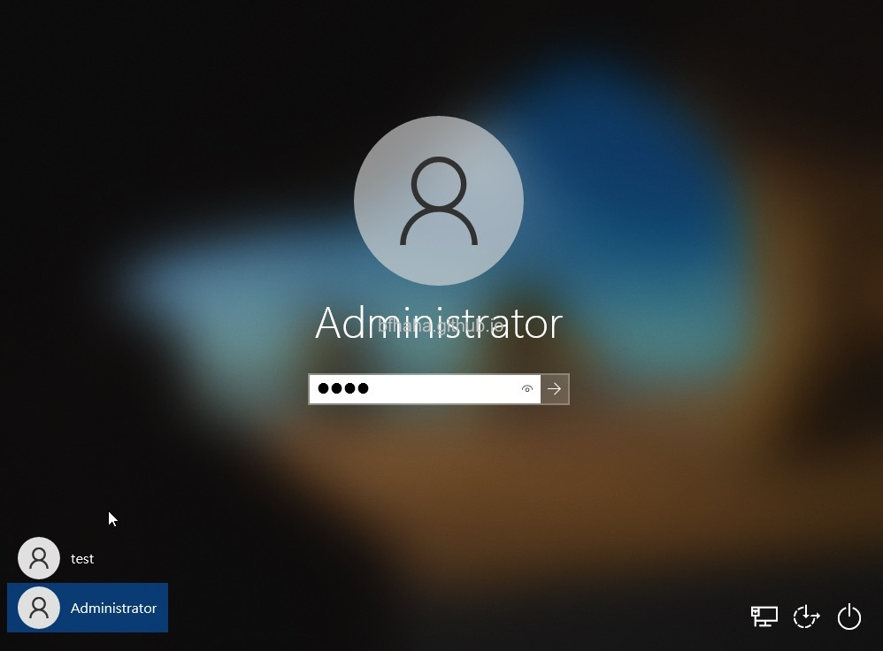
- 最後，別忘了
- 將開機順序改回硬碟開機，參考Part 2的教學。
- 將Windows Defender資料夾名稱改回來。
- 把螢幕小鍵盤換回來，可以直接到c:\windows\system32，把osk.exe刪掉，並且把osk.exe.ori改回osk.exe，把cmd.exe.ori改回cmd.exe。（可能要先開啟顯示檔案副檔名，隨便開啟一個資料夾，在功能表列中選擇[檢視]\[選項]\[檢視]標籤\取消勾選[隱藏已知檔案類型的副檔名]。）
把osk.exe刪掉的時候，可能會出現[您可以向TrustedInstaller取得權限來變更此檔案]的訊息，則在檔案上按右鍵，
- [內容]
- [安全性]標籤
- [進階]
- 在[擁有者]後面有個[變更]連結，點進去
- 在[請輸入物件名稱來選取]中輸入使用者名稱，使用者名稱就是你登入的時候的那個名字
- 按[檢查名稱]，會跑出全名
- 按下[確定]
- 可以看到[擁有者]已經變更
- 在下面的選單中有個Users，選取它，但下面的動作選項只有[檢視]
- 一路按下[確定]離開。
- 再重複上面的步驟，進到相同的畫面
- 再次選取Users，可以看到下面的動作選項變了，按下[變更權限]
- 接著就會多出[編輯]的動作選項
- 勾選[完全控制]
- 一路按[確定]離開